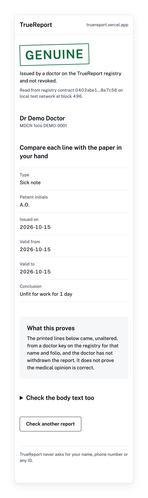
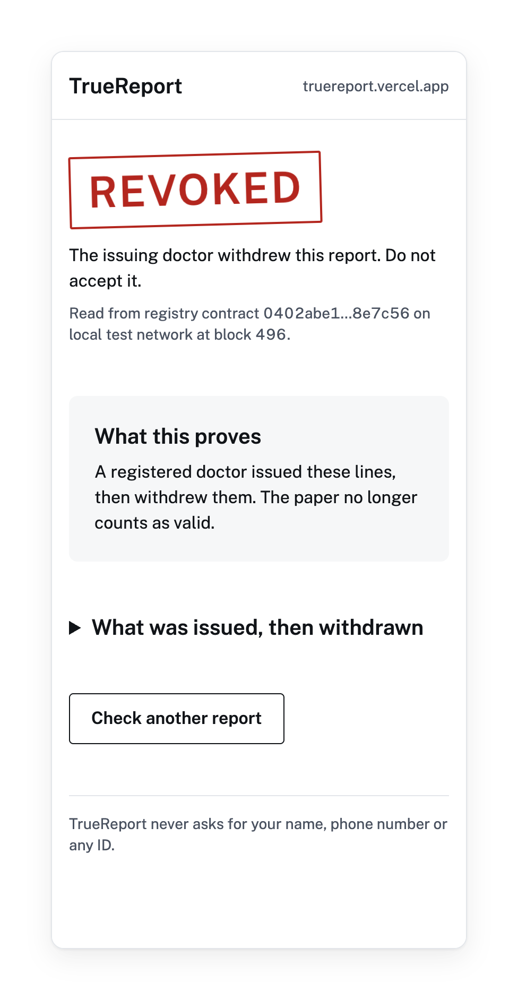
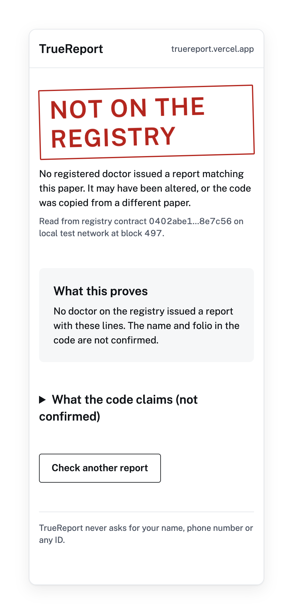

A registered Nigerian doctor prints a QR code. A stranger scans it with no wallet and sees Genuine, Revoked or Not on the registry.
truereport.vercel.app
lack security featuresand
forgery is endemic(IRB Canada, 2025).
to stop the proliferation of fake medical reports(2019).



| Contract: register, issue, revoke, refuse impostors | 21 of 21 simulator tests pass |
| Full flow on a Midnight network | Passed on a local devnet: add doctor, issue ×2, revoke, impostor refused, no-wallet read |
| Midnight Preview | Not yet: waiting on faucet funds; the live site says so |
| Issue and revoke through Lace on the web | Built, not tested yet; the CLI is the tested path |
| That the medical opinion is correct | Not claimed: origin, integrity and revocation only |